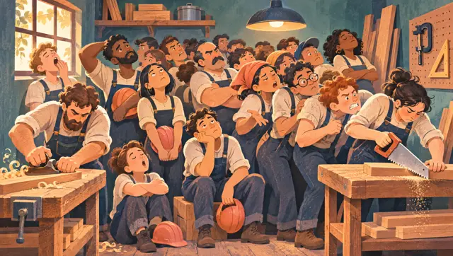

מה זה עלות?
על מה המסעדה מוציאה כסף, ומה באמת נחשב עלות?
מסעדה אחת ושתי שאלות
הכללהפירמה מוסיפה עוד ועוד ארוחות, כל עוד הארוחה הבאה עולה לה לא יותר מהמחיר (P = MC). אבל היא מבשלת בכלל רק אם המחיר מכסה לפחות את העלות המשתנה של ארוחה (P ≥ min AVC). את הסימנים נסביר בהמשך.
הכירו את המסעדה מהסיכום. יש לה עלות קבועה של 20 ₪, שמשלמים גם ביום שלא מבשלים בו כלום. כל עובד עולה 80 ₪, וכל ארוחה עולה עוד 2 ₪ בחומרי גלם. את מחיר הארוחה קובע השוק, לא המסעדה.
- 20₪: עלות קבועה (FC)
- 80₪: שכר של עובד אחד (w)
- 2₪: חומרי גלם לארוחה (c)
- 0–70ארוחות (Q), עם 0 עד 6 עובדים
זו אותה מסעדה. בשיעור 5 ראינו כמה ארוחות היא מכינה עם כל מספר של עובדים (פונקציית הייצור). עכשיו נשאל כמה זה עולה.
| עובדים L | 0 | 1 | 2 | 3 | 4 | 5 | 6 |
|---|---|---|---|---|---|---|---|
| ארוחות Q | 0 | 15 | 29 | 42 | 54 | 63 | 70 |
בכלכלה קוראים לעסק כזה פירמה: עסק שמייצר משהו ומוכר אותו. בכללים כתוב ״פירמה״, ובדוגמה ״המסעדה״.
כל בוקר המסעדה צריכה לענות על שתי שאלות:
- כמה ארוחות להכין היום, כדי שהרווח יהיה הכי גדול?
- האם בכלל לפתוח, או שעדיף לסגור?
כדי לענות, צריך לדעת כמה עולה כל ארוחה. לכן רוב השיעור עוסק בעלויות, בדיוק לפי הסדר של הסיכום: קודם מה זה עלות, אחר כך ההנחות על השוק, אחר כך ההגדרות, ואז טבלת המסעדה. בסוף מחברים את העלויות למחיר, ומקבלים את עקומת ההיצע.
איך זה מתחבר
- שיעור 5פונקציית הייצורכמה ארוחות מוסיף כל עובד: TP, MPלשיעור 5
- השיעור הזהעלויותכמה עולה כל ארוחה: MC = w / MP + c
- הסוף של השיעורהיצעכמה הפירמה מוכרת בכל מחיר: MC העולה מעל min AVC
תפוקה שולית פוחתת (שיעור 5) היא הסיבה שהעלות השולית MC עולה. והעלייה ב־MC היא הסיבה שעקומת ההיצע עולה. זו שרשרת אחת.
את הסיכום המקורי אפשר לפתוח כאן (PDF, 5 עמודים). השיעור הזה מבוסס על עמודים 3 עד 5. הדוגמה של המרצה מהשקפים, מפעל הקסדות, נמצאת בחלק ״מהמצגת״.
הנושא הבא · נושא 2עלות חשבונאית מול עלות כלכליתעלות חשבונאית מול עלות כלכלית
הכללעלות חשבונאית = כסף שיצא מהקופה. עלות כלכלית = כל ההוצאות, וגם מה שוויתרנו עליו. היא קרובה מאוד לעלות האלטרנטיבית. כסף שכבר יצא ולא יחזור (עלות שקועה) לא משפיע על החלטות.
בסיכום יש חמישה מושגים, זה אחרי זה. הנה הם, באותו סדר, עם דוגמה מהמסעדה:
- עלות חשבונאית. עלויות תזרימיות: כסף שיוצא מהכיס (out of the pocket costs). נוסף על כך רושמים פחת: מחלקים את מחיר הציוד על כמה שנים, ובכל שנה רושמים חלק ממנו כהוצאה. את כל זה רואים בדוח רווח והפסד. במסעדה: משכורות, קניות בשוק, חשמל, ופחת על התנור.
- עלות כלכלית. לוקחת את כל ההוצאות, וגם את מה שוויתרנו עליו. לכן היא קרובה מאוד לעלות אלטרנטיבית: מה שהיינו מקבלים באפשרות הטובה ביותר שלא בחרנו.
- עלות העבודה w. ההוצאה של העסק על העסקת עובדים: השכר שהעובד מקבל. בעיני כלכלן זה גם מה שהעובד היה מרוויח בעבודה אחרת. במסעדה: w = 80 ₪ לעובד.
- עלות ההון. ההון הוא ההשקעה במבנה, במטבח ובציוד. כלכלן שואל: בכמה אפשר היה להשכיר אותם למישהו אחר? זו העלות הכלכלית שלהם.
- עלות שקועה. הוצאה שכבר קרתה ואין דרך להחזיר אותה, ולכן היא לא משפיעה על ההחלטות עכשיו. במסעדה: התנור שנקנה בשנה שעברה ואי אפשר למכור אותו.

שתי דוגמאות מהחיים
קניתם כרטיס להופעה ב־300 ₪, ואי אפשר להחזיר אותו. ביום ההופעה יורד גשם חזק. האם ללכת? את ה־300 ₪ כבר שילמתם, ולא תקבלו אותם בחזרה גם אם תישארו בבית. לכן הם לא צריכים להשפיע על ההחלטה. משווים רק את מה שעוד אפשר לשנות: ההנאה מההופעה מול הרטיבות. ה־300 ₪ הם עלות שקועה.
דנה מבשלת במסעדה של עצמה ולא משלמת לעצמה משכורת. רואה החשבון רושם 0 על העבודה שלה. הכלכלן רושם את מה שהיא הייתה מרוויחה כטבחית שכירה, למשל 12,000 ₪ בחודש. נניח שהמסעדה מרוויחה 8,000 ₪ בחודש. ברישומים יש לה רווח חשבונאי של 8,000 ₪. אבל הרווח הכלכלי שלה הוא 8,000 − 12,000 = −4,000 ₪. כלומר, עדיף לה להיות שכירה.
אותו רעיון, בשקף של המרצה
| גורם ייצור | רואה חשבון | כלכלן |
|---|---|---|
| עבודה | השכר לשעה, w. | אותו דבר: w. מניחים שזה גם מה שהעובד היה מקבל בעבודה אחרת. |
| הון (מבנה, ציוד) | המחיר ששילמו בעבר (עלות היסטורית), מחולק על כמה שנים: פחת. | המחיר ששילמו בעבר הוא עלות שקועה (בשקף: ״עלות אבודה״, sunk cost). שואלים: בכמה אפשר להשכיר את ההון לשימוש אחר? זו העלות האלטרנטיבית של ההון. |
גורם ייצור (בקיצור: גו״י) = כל דבר שמשתמשים בו כדי לייצר: עובד, מכונה, מבנה.
״המחיר ששילמנו על התנור הוא העלות שלו״. לא. כסף שכבר יצא ולא יחזור לא נכנס להחלטה. כלכלן לא סופר פחת. הוא שואל בכמה אפשר להשכיר את התנור. לכל המלכודות
במסעדה: נניח שהעלות הקבועה, 20 ₪, היא שכר הדירה. גם אם המבנה היה של בעלת המסעדה, העלות הכלכלית הייתה זהה: זה הסכום שהיא הייתה מקבלת אילו השכירה אותו למישהו אחר.
עלות חשבונאית = עלויות תזרימיות ופחת (דוח רווח והפסד). עלות כלכלית = כל ההוצאות וגם מה שוויתרנו עליו, כלומר עלות אלטרנטיבית. עלות העבודה בעיני כלכלן = מה שהעובד היה מרוויח בעבודה אחרת. עלות ההון בעיני כלכלן = כמה אפשר לקבל אם משכירים אותו. עלות שקועה לא משפיעה על החלטות.
תחרות משוכללת
מי קובע את מחיר הארוחה? ההנחות שעליהן בנוי כל השיעור.
תחרות משוכללת: המחיר נתון, ולכן MR = P
הכללבתחרות משוכללת הפירמה מקבלת את מחיר השוק P כנתון, ומוכרת כמה שהיא רוצה במחיר הזה. לכן כל ארוחה נוספת מכניסה בדיוק P. בקיצור: MR = P (MR = פדיון שולי: הכסף שמכניסה עוד יחידה אחת).
בשוק יש 300 דוכנים, וכולם מוכרים אותן עגבניות. אם מוכר אחד יבקש שקל יותר, כולם יקנו בדוכן הסמוך. אם הוא יוריד את המחיר, הוא סתם יפסיד כסף: במחיר השוק הוא ממילא מוכר כל מה שהביא. אז הוא מקבל את המחיר כנתון. מוכר כזה נקרא נוטל מחיר (price taker).
שבע ההנחות, כמו בסיכום
- מוצר זהה. כל הפירמות מוכרות אותו מוצר. בעיני הקונה ארוחה היא ארוחה.
- תחרות בין הפירמות. אין תיאום מחירים, והן לא פועלות יחד. (קבוצה שמתאמת מחירים נקראת קרטל.)
- כל פירמה פועלת באופן עצמאי. היא לא תלויה בפירמות האחרות.
- המחיר P נתון. הפירמה לא יכולה להשפיע על מחיר המוצר בשוק. המחיר נקבע מראש, והוא לא תלוי בכמות שהיא מייצרת.
- שני גורמי ייצור: הון ועבודה. בטווח הקצר (ט״ק) גורם אחד קבוע (בדרך כלל ההון, K), והשני משתנה (בדרך כלל העבודה, L).
- תפוקה שולית פוחתת. כל העובדים זהים זה לזה, וכך גם המכונות. הגורם שאינו קבוע משתנה, ומנקודה מסוימת כל יחידה נוספת שלו מוסיפה פחות לתפוקה. (תזכורת בשיעור 5)
- שוק גורמי הייצור פתוח. הפירמה יכולה לקנות ולמכור כל כמות במחירי השוק, בלי להשפיע על המחיר. לכן גם השכר w נתון.
הנחה 4 היא הכי חשובה לשיעור: המחיר נתון. כל ארוחה נמכרת באותו מחיר, ולכן כל ארוחה נוספת מוסיפה לפדיון בדיוק P. זה MR = P.
״MR = P תמיד״. לא. רק בתחרות משוכללת, כשהפירמה נוטלת מחיר. לכל המלכודות
במספרים: נניח שארוחה נמכרת ב־10 ₪. פדיון = כל הכסף שנכנס מהמכירות, TR = P · Q. 42 ארוחות מכניסות 10 · 42 = 420, ו־54 ארוחות מכניסות 10 · 54 = 540. 12 הארוחות הנוספות הכניסו 120, כלומר 10 לכל ארוחה: בדיוק המחיר.
שבע ההנחות: מוצר זהה, תחרות בלי תיאום, כל פירמה עצמאית, המחיר נתון, שני גורמי ייצור (אחד קבוע בט״ק), תפוקה שולית פוחתת, שוק גורמי ייצור פתוח. בגלל שהמחיר נתון: TR = P·Q הוא קו ישר, ו־MR = P.
משפחת העלויות
שבע ההגדרות מהסיכום: VC, FC ו־TC, שלוש עלויות ממוצעות, והעלות השולית MC.
עלות משתנה, עלות קבועה ועלות כוללת
הכללעלות משתנה (VC) תלויה בכמות: כמה אני מוציא על גורם הייצור המשתנה כדי לייצר Q. עלות קבועה (FC) היא מספר קבוע. עלות כוללת: TC(Q) = VC(Q) + FC.
שכר הדירה קבוע בכל חודש, לא משנה כמה עובדים או מבשלים. זו עלות קבועה. החשבונות (חשמל, גז, מים) משתנים: יותר בישולים, חשבון גבוה יותר. זו עלות משתנה. אם לא מבשלים בכלל, משלמים רק את השכירות.

תשלום על גורם ייצור שאפשר לשנות כבר בטווח הקצר: העבודה, וגם חומרי הגלם. רוצים יותר ארוחות? מוסיפים עובדים וקונים עוד חומרים. אפשר להימנע ממנה: אם לא מייצרים בכלל, VC = 0.
תשלום על גורם ייצור שאי אפשר לשנות מהר, בדרך כלל ההון: המבנה והציוד. התשלום קבוע בחוזה, למשל חוזה שכירות לשנה. בטווח הקצר משלמים אותו גם אם לא מייצרים כלום.
במסעדה
למשל 3 עובדים מכינים 42 ארוחות: VC = 80 · 3 + 2 · 42 = 240 + 84 = 324, ולכן TC = 324 + 20 = 344.
שלושה דברים לראות בגרף
- FC היא קו אופקי. היא לא זזה כשמייצרים יותר.
- גם כשלא מייצרים, TC(0) = FC = 20. FC קובעת איפה TC מתחילה.
- TC ו־VC ״מקבילות״: הפער ביניהן תמיד 20. במסעדה הפער קטן, ולכן הקווים כמעט נוגעים.
TC(Q) = VC(Q) + FC. FC קבועה בכל כמות ומשולמת גם ב־Q = 0. VC עולה עם Q ושווה 0 ב־Q = 0. ההפרש בין TC ל־VC הוא תמיד FC.
עלויות ממוצעות: AVC, AFC, ATC
הכללעלות ממוצעת = העלות של ארוחה אחת. מחלקים את העלות במספר הארוחות Q, ולא במספר העובדים. ATC = AVC + AFC.
כמו בסיכום: ATC = TC / Q = (VC + FC) / Q = VC / Q + FC / Q = AVC + AFC.
במסעדה, בשורה של 3 עובדים (42 ארוחות): AVC = 324 / 42 ≈ 7.71, AFC = 20 / 42 ≈ 0.48, ולכן ATC = 344 / 42 ≈ 8.19. כל ארוחה עולה בממוצע כ־8 ₪.
AFC יורדת כל הזמן
בסיכום: ״ככל שתהיה יותר כמות, הממוצע יהיה נמוך״. FC = 20 לא משתנה, ו־Q גדל: 20 / 15 ≈ 1.33, 20 / 42 ≈ 0.48, 20 / 70 ≈ 0.29. אותם 20 ₪ מתחלקים על יותר ארוחות, ולכן כל ארוחה ״נושאת״ פחות. AFC לא עולה אף פעם, ולא מגיעה ל־0.
נסיעה במונית עולה 20 ₪, לא משנה כמה נוסעים. נוסע אחד משלם 20. ארבעה נוסעים משלמים 5 כל אחד. ככל שיש יותר נוסעים, החלק של כל אחד קטן, אבל לא מגיע ל־0. כך בדיוק מתנהגת AFC.
ומה עם AVC ו־ATC?
במסעדה כל עובד מוסיף פחות ארוחות מהקודם (MP = 15, 14, 13 וכן הלאה). לכן כל ארוחה עולה בממוצע קצת יותר, ו־AVC עולה כבר מההתחלה. ATC היא AVC ועוד AFC. בהתחלה AFC יורדת מהר, ולכן ATC יורדת. אחר כך העלייה של AVC חזקה יותר, ו־ATC עולה. כך ATC מקבלת צורת U, עם מינימום ב־42 ארוחות.
בהרבה דוגמאות (גם בדוגמת המצגת) MP עולה בהתחלה, ולכן גם AVC בצורת U. במסעדה החלק היורד פשוט לא קיים.
AVC = VC/Q, AFC = FC/Q, ATC = TC/Q = AVC + AFC. מחלקים בכמות התפוקה Q. AFC יורדת תמיד ולא מגיעה ל־0. הפער בין ATC ל־AVC הוא AFC, ולכן הוא קטן ככל ש־Q גדל.
להעמקה: AVC = w / AP + c
AVC = (w·L + c·Q) / Q = w / (Q/L) + c = w / AP + c. כלומר העלות המשתנה הממוצעת היא ״תמונת מראה״ של התפוקה הממוצעת. במסעדה AP הכי גבוהה (15 ארוחות לעובד) עם עובד אחד, ולכן שם AVC הכי נמוכה: 80 / 15 + 2 ≈ 7.33.
העלות השולית MC: כמה עולה הארוחה הבאה
הכללMC = בכמה עלתה העלות הכוללת, חלקי כמה ארוחות נוספו. MC = ΔTC / ΔQ. FC מתקזזת, ולכן גם MC = ΔVC / ΔQ.
״שולי״ בכלכלה תמיד אומר: מה קורה כשמוסיפים עוד יחידה. בדיוק כמו התפוקה השולית משיעור 5.
כמו בסיכום: למה FC נעלמת
- MC = (TC₁ − TC₀) / (Q₁ − Q₀) = ΔTC / ΔQ.
- TC₀ = VC₀ + FC ו־TC₁ = VC₁ + FC.
- לכן TC₁ − TC₀ = VC₁ − VC₀: ה־FC מתקזזת. MC לא תלויה ב־FC בכלל.
במסעדה
העובד הרביעי מעלה את התפוקה מ־42 ל־54 ארוחות. העלות הכוללת עולה מ־344 ל־448. נוספו 12 ארוחות, ולא אחת. לכן מחלקים את העלות הנוספת ב־12:
ΔTC = 448 − 344 = 104 ΔQ = 54 − 42 = 12
MC = ΔTC / ΔQ = 104 / 12 ≈ 8.67
בדיקה עם VC: ΔVC = 428 − 324 = 104. אותו דבר, כי FC התקזזה.
השולית ״מושכת״ את הממוצעת
הממוצע שלכם 80. אם המבחן הבא 95, הממוצע עולה. אם המבחן הבא 70, הממוצע יורד. MC היא ״הציון של הארוחה החדשה״, ו־AVC או ATC הן הממוצע. (אותו כלל ראינו עם MP ו־AP בשיעור 5.)
במסעדה, ATC: ב־29 ארוחות ATC ≈ 8.21. הארוחות הבאות עולות MC ≈ 8.15, פחות מהממוצע, ולכן ATC יורדת ל־8.19 (ב־42 ארוחות). הארוחות שאחריהן עולות MC ≈ 8.67, יותר מהממוצע, ולכן ATC עולה ל־8.30. המינימום של ATC הוא בדיוק במקום ש־MC עוברת אותה.
ו־AVC? הארוחות הראשונות עולות MC = AVC = 7.33, וכל ארוחה אחריהן עולה יותר מהממוצע. לכן AVC עולה כל הזמן, והמינימום שלה בנקודה הראשונה, 15 ארוחות.
לכן MC חותכת את AVC ואת ATC בנקודת המינימום שלהן, מלמטה. קודם את AVC (בכמות קטנה יותר), ואחר כך את ATC.
MC = ΔTC/ΔQ = ΔVC/ΔQ, כי TC₁ − TC₀ = (VC₁ + FC) − (VC₀ + FC) = VC₁ − VC₀. כש־MC מתחת לממוצעת, הממוצעת יורדת. כש־MC מעל, היא עולה. MC חותכת את AVC ואת ATC במינימום שלהן.
MC = w / MP + c: תמונת מראה של MP
הכללהעובד האחרון עולה w ומוסיף MP ארוחות, וכל ארוחה עולה עוד c בחומרי גלם. לכן MC = w / MP + c. כשאין עלות ליחידה (c = 0), זו הנוסחה של המרצה: MC = w / MP.
ההוכחה, בארבעה צעדים
- העובד האחרון מוסיף MP ארוחות, ועולה w.
- השכר שלו מתחלק על הארוחות שהוסיף: w / MP לכל ארוחה.
- כל ארוחה עולה עוד c בחומרי גלם.
- ביחד: MC = w / MP + c. במסעדה: MC = 80 / MP + 2.
העובד הראשון מוסיף 15 ארוחות: 80 / 15 + 2 ≈ 7.33. העובד הרביעי מוסיף 12: 80 / 12 + 2 ≈ 6.67 + 2 = 8.67, בדיוק כמו בחישוב של ΔTC / ΔQ בנושא 6. העובד השישי מוסיף רק 7 (צפוף במטבח!): 80 / 7 + 2 ≈ 13.43.

| Lעובדים | Qארוחות | MPתפ״ש | 80 / MPשכר לארוחה | MC = 80 / MP + 2עלות שולית |
|---|---|---|---|---|
| 1 | 15 | 15 | 5.33 | 7.33 |
| 2 | 29 | 14 | 5.71 | 7.71 |
| 3 | 42 | 13 | 6.15 | 8.15 |
| 4 | 54 | 12 | 6.67 | 8.67 |
| 5 | 63 | 9 | 8.89 | 10.89 |
| 6 | 70 | 7 | 11.43 | 13.43 |
מה מזיז את MC?
המונה גדל: MC עולה בכל כמות.
חומרי הגלם מתייקרים: MC עולה בדיוק באותו סכום בכל כמות.
כל עובד מכין יותר (ניסיון, ציוד טוב יותר): המכנה גדל, ו־MC יורדת.
MC = w / MP + c, ובלי עלות ליחידה MC = w / MP (״אחת המשוואות החשובות בקורס״, בשקף). קשר הפוך בין MC ל־MP: תפוקה שולית פוחתת, ולכן MC עולה. w או c עולים: MC עולה בכל Q. MP עולה: MC יורדת.
שאלה שאוהבים לשאול: למה FC לא מופיעה בנוסחה?
כי MC מודדת רק שינוי בעלות, ו־FC לא משתנה. אם שכר הדירה של המסעדה יעלה מ־20 ל־50, MC לא תזוז בכלל. מה כן ישתנה? AFC ו־ATC, ולכן גם נקודת האיזון. AVC ו־MC נשארות כמו שהן.
טבלת העלויות של המסעדה
ממלאים את הטבלה מהסיכום עמודה אחרי עמודה, ואז רואים את כל העקומות בגרף אחד.
ממלאים את הטבלה, עמודה אחרי עמודה
הכללכל עמודה נבנית מהקודמות, בסדר של הסיכום: MP, FC, VC ו־TC. אחר כך מחלקים ב־Q (AVC, AFC, ATC), ובסוף MC.
הנתונים מהסיכום (עמוד 5). FC = 20 (״קבוע!״). VC מורכבת משני חלקים: 80 ₪ לכל עובד, ועוד 2 ₪ חומרי גלם לכל ארוחה. מספר הארוחות Q לכל מספר עובדים L הוא של מסעדה 1 משיעור 5.
הנוסחהVC = 80 · L + 2 · Q, TC = VC + 20
בסיכום מולאו רק העמודות L, Q, MP, FC, VC ו־TC. כאן ממלאים את כולן. כל לחיצה על ״העמודה הבאה״ מוסיפה עמודה ומסבירה איך מחשבים אותה. הזיזו את ״כמה עובדים?״ כדי לראות את החישוב בשורה אחרת.
מילה שתחזור הרבה: מעבר = מה שקורה כשמוסיפים עובד אחד, כלומר עוברים משורה לשורה הבאה. MC של מעבר נכתבת בשורה שבסופו.
נסו: לחצו ״העמודה הבאה״. כל לחיצה מוסיפה עמודה ומסבירה אותה.
הטבלה המלאה
| Lעובדים | Qארוחות | MPתפוקה שולית | FCקבועה | VCמשתנה | TCכוללת | AVCמשתנה ממוצעת | AFCקבועה ממוצעת | ATCכוללת ממוצעת | MCשולית |
|---|---|---|---|---|---|---|---|---|---|
| 0 | 0 | — | 20 | 0 | 20 | — | — | — | — |
| 1 | 15 | 15 | 20 | 110 | 130 | 7.33 | 1.33 | 8.67 | 7.33 |
| 2 | 29 | 14 | 20 | 218 | 238 | 7.52 | 0.69 | 8.21 | 7.71 |
| 3 | 42 | 13 | 20 | 324 | 344 | 7.71 | 0.48 | 8.19 | 8.15 |
| 4 | 54 | 12 | 20 | 428 | 448 | 7.93 | 0.37 | 8.30 | 8.67 |
| 5 | 63 | 9 | 20 | 526 | 546 | 8.35 | 0.32 | 8.67 | 10.89 |
| 6 | 70 | 7 | 20 | 620 | 640 | 8.86 | 0.29 | 9.14 | 13.43 |
להציג עמודה אחת
הניסוי צריך JavaScript. בלעדיו הטבלה מוצגת במלואה, עם כל העמודות.
מקרא: מסגרת = תא שתוקן (ראו למטה). עלויות ממוצעות ושוליות מעוגלות לשתי ספרות אחרי הנקודה. בטלפון גוללים את הטבלה הצידה.
ממלאים בסדר הזה: MP = ΔQ, FC (אותו מספר בכל שורה), VC = w·L + c·Q, TC = VC + FC, AVC = VC/Q, AFC = FC/Q, ATC = TC/Q, MC = ΔTC/ΔQ (בשורה שבסוף המעבר). בדיקה מהירה: MC = w/MP + c, ו־ATC = AVC + AFC. בשורה של 0 עובדים אין ממוצעים: אי אפשר לחלק ב־0.
כל העקומות בגרף אחד
הכללMC חותכת את ATC בנקודה הנמוכה שלה (42 ארוחות). במסעדה AVC הכי נמוכה כבר בנקודה הראשונה (15 ארוחות), ושם MC = AVC.
אלה העמודות AVC, ATC ו־MC מהטבלה, כגרף. הציר האנכי מתחיל ב־6 (הזיגזג בתחתית הציר), כדי שההבדלים הקטנים ייראו.
נסו: הקישו על הגרף כדי לבחור כמות, או השתמשו בכפתורים שמתחתיו. במקלדת: לחצו על הגרף והשתמשו בחיצים.
הניסוי צריך JavaScript. את אותן עקומות רואים בגרף של נושא 5, ואת המספרים בטבלה של נושא 8.
מה לראות
- MC עולה כל הזמן, כי MP יורדת כל הזמן.
- ב־15 ארוחות MC = AVC = 7.33: זו נקודת הסגירה. אחריה MC מעל AVC, ו־AVC עולה.
- ATC יורדת עד 42 ארוחות (8.19) ואז עולה: זו נקודת האיזון. MC עוברת אותה בדיוק שם.
- הפער בין ATC ל־AVC הוא AFC, והוא נהיה קטן יותר ויותר.
כמו בשקפים, את MC של כל מעבר מסמנים בכמות שבסוף המעבר. הקווים רק מחברים בין הנקודות של הטבלה.
הפרק הבא · פרק ה׳כמה לייצר, והאם לייצר בכללכמה לייצר, והאם לייצר בכלל
המחיר נתון. כמה ארוחות כדאי להכין, ומתי עדיף לסגור? בסיכום אין מחיר, ולכן כאן מניחים מחירים, ומסמנים אותם ״נניח״.
כמה לייצר? עד ש־P = MC
הכללכל עוד ארוחה נוספת מכניסה יותר ממה שהיא עולה (P > MC), כדאי להכין אותה. עוצרים כש־P = MC, על החלק העולה של MC.
שתי ההגדרות האחרונות בעמוד 3 של הסיכום:
כוס לימונדה נמכרת ב־5 ₪. אם להכין כוס נוספת עולה 3 ₪, מכינים אותה: מרוויחים 2 ₪. אם הכוס הבאה עולה 7 ₪ (נגמרו הלימונים, צריך לרוץ לחנות היקרה), לא מכינים: מפסידים 2 ₪.
המסעדה, אם נניח P = 10
בטבלה יש עמודה חשובה: רווח שולי (Mπ = P − MC), בכמה עולה הרווח מכל ארוחה במעבר. את הכמות הכי טובה מסמנים Q*.
| Lעובדים | Qארוחות | TCכוללת | MCשולית | TR = P·Qפדיון | MR = Pפדיון שולי | πרווח | Mπ = P − MCרווח שולי |
|---|---|---|---|---|---|---|---|
| 0 | 0 | 20 | — | 0 | — | −20 | — |
| 1 | 15 | 130 | 7.33 | 150 | 10 | 20 | 2.67 |
| 2 | 29 | 238 | 7.71 | 290 | 10 | 52 | 2.29 |
| 3 | 42 | 344 | 8.15 | 420 | 10 | 76 | 1.85 |
| 4 | 54 | 448 | 8.67 | 540 | 10 | 92 | 1.33 |
| 5 | 63 | 546 | 10.89 | 630 | 10 | 84 | −0.89 |
| 6 | 70 | 640 | 13.43 | 700 | 10 | 60 | −3.43 |
- מוסיפים עובד כל עוד MC ≤ P. המעבר ל־54 ארוחות עולה 8.67 לארוחה, פחות מ־10: כדאי.
- עוצרים כש־MC > P. המעבר ל־63 ארוחות עולה 10.89 לארוחה, יותר מ־10: לא כדאי.
- מחשבים רווח. Q* = 54 (4 עובדים): π = 540 − 448 = 92. זה הרווח הגדול ביותר בעמודה.
בטבלה אין כמות שבה P = MC בדיוק, ולכן לוקחים את המעבר האחרון שבו MC לא גבוהה מהמחיר.
למה ״על החלק העולה״? P = MC הוא תנאי הכרחי, אבל לא מספיק
״הכרחי״ = חייב להתקיים. ״מספיק״ = אם הוא מתקיים, בטוח מצאנו את התשובה. כש־MC יורדת ואז עולה, קו מחיר אופקי יכול לחתוך אותה פעמיים. החיתוך על החלק היורד הוא דווקא נקודה של רווח מינימלי: מיד אחריו כל יחידה עולה פחות מהמחיר. במסעדה MC עולה כל הזמן, ולכן זה לא קורה. בדוגמת המצגת זה קורה: ראו את הגרף ״חיתוך כפול״.
TR = P·Q, π = TR − TC, MR = P. תנאי הכרחי למקסימום רווח: P = MC. תנאי מספיק: על החלק העולה של MC. בטבלה: מגדילים את Q כל עוד Mπ = P − MC ≥ 0.
לייצר בכלל? נקודת סגירה ונקודת איזון
הכללבטווח הקצר מייצרים רק אם P ≥ min AVC (נקודת הסגירה, במסעדה 7.33). רווח אמיתי יש רק כש־P > min ATC (נקודת האיזון, במסעדה 8.19).
הכלל P = MC מוצא את הכמות הכי טובה. אבל ״הכי טוב״ יכול להיות גם ההפסד הכי קטן. אז צריך לשאול: אולי עדיף לסגור? התשובה תלויה בשני דברים: כמה מהעלויות המחיר מכסה, ובאיזה טווח זמן מדובר.
תקופה קצרה מדי כדי לשנות הכול. יש עלות קבועה, ומשלמים אותה גם אם סוגרים.
תקופה ארוכה מספיק כדי לשנות את כל גורמי הייצור. אין עלות קבועה: אפשר לבטל את חוזה השכירות ולצאת מהענף.
שני התנאים, זה מול זה
P·Q − VC > 0
P·Q > VC (מחלקים ב־Q)
P > VC/Q
P > AVC
π = P·Q − TC > 0
P·Q > TC (מחלקים ב־Q)
P > TC/Q
P > ATC
למה בטווח הקצר מספיק לכסות רק את VC? כי את FC משלמים בכל מקרה, גם אם סוגרים. משווים בין שתי אפשרויות: לייצר, או לסגור ולהפסיד FC. אם הפדיון מכסה את VC ועוד קצת, ה״עוד קצת״ משלם חלק מ־FC, וההפסד קטן מ־FC.
נקודת הסגירה: min AVC = 7.33

נקודת הסגירה היא המינימום של AVC, הנקודה שבה MC חותכת את AVC. אם המחיר נמוך ממנה, הפירמה מפסיקה לייצר בטווח הקצר.
במסעדה, נניח P = 7: אפילו הארוחות הראשונות עולות 7.33 בעלות משתנה, יותר מ־7. כל ארוחה רק מגדילה את ההפסד. לכן סוגרים, וההפסד הוא FC = 20.
בין AVC ל־ATC: מייצרים בהפסד, כי זה עדיף על סגירה
בחורף יש מעט לקוחות בערבי אמצע השבוע. את השכירות משלמים בכל מקרה. אם ערב פתוח מכניס מספיק כדי לשלם על האוכל ועל העובדים, ועוד משאיר קצת לשכירות, כדאי לפתוח. המסעדה עדיין מפסידה, אבל פחות מאשר אם הייתה סוגרת.
במסעדה, נניח P = 8: המעבר ל־29 ארוחות עולה 7.71 (כדאי), והמעבר הבא עולה 8.15 (לא כדאי). לכן מכינים 29 ארוחות.
מייצרים: TR = 8 · 29 = 232, TC = 238, ולכן π = 232 − 238 = −6.
סוגרים: π = −FC = −20.
ההבדל: TR − VC = 232 − 218 = 14. אלה 14 ₪ שמשלמים חלק מ־FC. בזכותם ההפסד יורד מ־20 ל־6.
בין min AVC ל־min ATC הפירמה במצב של מזעור הפסדים. בטווח הקצר היא מייצרת, כי כך היא מפסידה פחות מאשר אם תסגור. בטווח הארוך היא תצא מהענף.
״פירמה שמפסידה תמיד נסגרת״. לא. בטווח הקצר, אם P ≥ AVC, היא ממשיכה לייצר ומפסידה פחות מ־FC. לכל המלכודות
נקודת האיזון: min ATC = 8.19

נקודת האיזון היא המינימום של ATC, הנקודה שבה MC חותכת את ATC. במחיר הזה הפדיון מכסה בדיוק את כל העלויות: רווח 0. במחיר גבוה יותר הפירמה מרוויחה.
במסעדה: min ATC = 344 / 42 ≈ 8.19. במחיר הזה המסעדה מכינה 42 ארוחות, ו־TR = TC = 344. נניח P = 10: המסעדה מכינה 54 ארוחות ומרוויחה 92, כי P = 10 > ATC ≈ 8.30. היא נשארת גם בטווח הארוך.
שלושה מחירים, שלושה ציורים
בכל ציור: הנקודה הכחולה היא Q*, והפס בין ATC לקו המחיר הוא הרווח (ירוק) או ההפסד (אדום) לכל ארוחה. הציר האנכי מראה רק את התחום שבין 6.5 ל־11, כדי שהפסים הקטנים ייראו.
Q* = 0 · π = −20 (ההפסד הוא FC)
Q* = 29 · TR = 232 · TC = 238 · π = −6
Q* = 54 · TR = 540 · TC = 448 · π = 92
Q = 0. ההפסד = FC. במסעדה: מחיר מתחת ל־7.33.
ההפסד קטן מ־FC. בטווח הארוך יוצאים. במסעדה: 7.33 עד 8.19.
רווח חיובי (או 0 בדיוק בנקודת האיזון). נשארים גם בט״א. במסעדה: 8.19 ומעלה.
איך מציירים את זה במבחן: מלבנים
בשקפים מציירים את הסכומים כמלבנים, מ־0 ועד Q*. (בשקפים כותבים TVC ו־TFC. זה אותו דבר כמו VC ו־FC: T = Total.)
- TR = P · Q*: כל המלבן, עד קו המחיר.
- TVC = AVC · Q*: המלבן התחתון.
- TFC = AFC · Q*: הפס שבין AVC ל־ATC.
- π = (P − ATC) · Q*: מה שנשאר, הרווח (או ההפסד).
בט״ק מייצרים אם P ≥ AVC (נקודת סגירה = min AVC). בט״א נשארים אם P ≥ ATC (נקודת איזון = min ATC). בין שתיהן: מזעור הפסדים, ההפסד קטן מ־FC. בציור: TR = P·Q*, TVC = AVC·Q*, TFC = AFC·Q*, π = (P − ATC)·Q*.
מזיזים את המחיר, ובונים את עקומת ההיצע
הכללהמחיר קובע את הכמות: מכינים עד P = MC, ורק אם המחיר לא נמוך מ־min AVC.
הזיזו את המחיר (כל המחירים כאן מונחים). המסעדה תוסיף עובדים כל עוד MC של המעבר לא גבוהה מהמחיר: המעברים האלה צבועים בירוק בגרף. כל מחיר שתבחרו יוסיף נקודה לגרף ההיצע, בלשונית ״עקומת ההיצע״.
נסו: גררו את המחיר, או בחרו מחיר מוכן.
עוד מספרים
ניסוי 4עקומת ההיצע נבנית מהמחירים שבחרתם
כל מחיר שבחרתם הוא נקודה: כמה ארוחות המסעדה מכינה במחיר הזה. נסו מחירים מתחת ל־7.33, בין 7.33 ל־8.19, ומעל 8.19.
הניסוי צריך JavaScript. את שלושת המצבים רואים בציורים של נושא 11, ואת ההיצע בטבלה של נושא 13.
עקומת ההיצע של המסעדה, ומה מזיז אותה
הכללעקומת ההיצע של הפירמה בטווח הקצר היא החלק העולה של MC, מעל min AVC. במחיר נמוך מזה, הכמות היא 0.
בטבלה יש רק כמויות מסוימות (15, 29, 42 וכן הלאה), ולכן ההיצע נראה כמו מדרגות. בכל מחיר מכינים עד המעבר האחרון שה־MC שלו לא גבוהה מהמחיר.
| Pמחיר הארוחה | Q*כמה ארוחות | למה |
|---|---|---|
| P < 7.33 | 0 | המחיר מתחת ל־min AVC = 7.33: סוגרים. |
| 7.33 ≤ P < 7.71 | 15 | הארוחות 1 עד 15 עולות 7.33 כל אחת, לא יותר מ־P. המעבר הבא עולה 7.71. |
| 7.71 ≤ P < 8.15 | 29 | הארוחות 16 עד 29 עולות 7.71 כל אחת, לא יותר מ־P. המעבר הבא עולה 8.15. |
| 8.15 ≤ P < 8.67 | 42 | הארוחות 30 עד 42 עולות 8.15 כל אחת, לא יותר מ־P. המעבר הבא עולה 8.67. |
| 8.67 ≤ P < 10.89 | 54 | הארוחות 43 עד 54 עולות 8.67 כל אחת, לא יותר מ־P. המעבר הבא עולה 10.89. |
| 10.89 ≤ P < 13.43 | 63 | הארוחות 55 עד 63 עולות 10.89 כל אחת, לא יותר מ־P. המעבר הבא עולה 13.43. |
| P ≥ 13.43 | 70 | הארוחות 64 עד 70 עולות 13.43 כל אחת, לא יותר מ־P. בטבלה אין עובד שביעי. |
במחיר שבדיוק שווה ל־MC של מעבר, המסעדה אדישה בין שתי הכמויות: הרווח זהה. מקובל לבחור את הגדולה, כמו בשקפים.
תזוזה על העקומה מול תזוזה של העקומה
הפירמה עוברת לנקודה אחרת על אותה עקומת היצע. העקומה לא זזה.
MC = w / MP + c משתנה בכל כמות, ולכן כל העקומה זזה.
MC יורדת. העקומה זזה ימינה ולמטה. באותו מחיר מכינים יותר.
MC עולה. העקומה זזה שמאלה ולמעלה. באותו מחיר מכינים פחות.
נסו: בחרו שינוי וראו לאן זזה העקומה. אחר כך הזיזו את המחוונים בעצמכם.
הניסוי צריך JavaScript. הכלל עצמו מופיע בכרטיסים שמעל הניסוי.
היצע הפירמה בט״ק = MC העולה מעל min AVC (ו־Q = 0 מתחת). שינוי ב־P: תזוזה על העקומה. MP עולה: S זזה ימינה ולמטה. w או c עולים: S זזה שמאלה ולמעלה. שינוי ב־FC לא מזיז את S בט״ק.
ההגדרה המלאה מהשקף
עקומת ההיצע של הפירמה בטווח הקצר אומרת כמה הפירמה תייצר בכל מחיר P. הפירמה רוצה רווח מקסימלי ומקבלת את המחיר כנתון. לכן העקומה היא החלק העולה של MC, מעל המינימום של AVC. במחיר נמוך מהמינימום הזה, הפירמה מפסיקה לייצר.
תרשים החלטה: כמה לייצר, והאם לייצר בכלל
הכללשלוש שאלות, תמיד באותו סדר: כמה לייצר? האם לייצר בכלל? רווח או הפסד?
- 1כמה לייצר?
מוצאים את Q* שבו P = MC, על החלק העולה של MC.
- 2לייצר בכלל, בטווח הקצר?
משווים את P ל־min AVC (במסעדה: 7.33).
P < min AVCסוגריםQ = 0. ההפסד = FC.
P ≥ min AVCמייצרים Q*וממשיכים לצעד 3.
- 3רווח או הפסד? ומה בטווח הארוך?
משווים את P ל־ATC ב־Q*.
P < ATCהפסד קטן מ־FCבט״ק ממשיכים. בט״א יוצאים מהענף.
P = ATCרווח 0נקודת האיזון.
P > ATCרווח חיובינשארים גם בט״א.
| מחיר | Q* | טווח קצר | טווח ארוך |
|---|---|---|---|
| 7 | 0 | סוגרים: 7 < 7.33. הפסד 20. | יוצאים: 7 < 8.19. |
| 8 | 29 | מייצרים: π = −6, עדיף על −20. | יוצאים: 8 < 8.19. |
| 10 | 54 | מייצרים: π = 92. | נשארים: 10 > 8.19. |
דוגמת הקסדות מהמצגת
המבחן עשוי להשתמש במספרים מהשקפים. כאן הדוגמה של המרצה בקיצור: סרטון, הטבלה, הרווח במחיר 24 והתיקונים לשקפים.
מפעל הקסדות: הדוגמה מהשקפים
הכללאותם כללים בדיוק, עם מספרים אחרים: FC = 160, w = 120, ואין חומרי גלם (c = 0). לכן MC = w / MP, הנוסחה של המרצה.
ההבדל החשוב מהמסעדה: כאן MP עולה בהתחלה (6, 8, 10) ורק אחר כך יורדת. לכן MC יורדת ואז עולה, ו־AVC בצורת U, כמו בציורים בשקפים.
סרטון: דוגמת הקסדות מהמצגת
2:26 דקות · קריינות וכתוביות בעבריתתמליל הסרטון
בסרטון הזה נבין כמה עולה לייצר, וכמה כדאי לייצר.
את העלות הקבועה משלמים גם כשלא מייצרים כלום: שכירות, מכונות, חוזים.
והעלות המשתנה גדלה עם הייצור: עוד עובדים, עוד חומרים.
במפעל הקסדות, העלות הקבועה היא 160 ₪, וכל עובד עולה 120 ₪.
מחלקים כל עלות בכמות, ומקבלים עלויות ממוצעות. העלות הקבועה הממוצעת תמיד יורדת, כי היא מתחלקת על יותר קסדות.
העלות השולית (MC) היא כמה עולה הקסדה הבאה.
והיא קשורה לתפוקה השולית: העלות השולית שווה לשכר חלקי התפוקה השולית.
העובד השלישי מוסיף 10 קסדות, אז כל קסדה שלו עולה 12 ₪. העובד השביעי מוסיף רק 4, אז כל קסדה שלו עולה 30 ₪.
העלות השולית חותכת את שתי העלויות הממוצעות בדיוק בנקודת המינימום שלהן: 15 ו־20.
ועכשיו, להחלטה. בתחרות משוכללת, כל קסדה נוספת מכניסה בדיוק את המחיר.
לכן מייצרים כל עוד המחיר גבוה מהעלות השולית, ועוצרים כשהמחיר שווה לה, בחלק העולה של העקומה.
במחיר 24, מייצרים 43 קסדות, והרווח הוא 152 ₪.
המינימום של העלות המשתנה הממוצעת, 15, הוא נקודת הסגירה. במחיר נמוך ממנו, סוגרים.
בין 15 ל־20 מפסידים, אבל ממשיכים לייצר, כי ההפסד קטן מהעלות הקבועה שמפסידים כשסוגרים.
ומעל 20, נקודת האיזון, מרוויחים באמת, גם בטווח הארוך.
ולכן, עקומת ההיצע של הפירמה היא העלות השולית העולה, מעל נקודת הסגירה.
באתר מחכים לכם גרפים שאפשר להזיז, טבלאות עלויות ושאלות מבחן פתורות. בהצלחה!
| Lעובדים | TP = qקסדות ליום | MPתפוקה שולית | APתפוקה ממוצעת | FCעלות קבועה | VCעלות משתנה | TCעלות כוללת | MCעלות שולית | AFCקבועה ממוצעת | AVCמשתנה ממוצעת | ATCכוללת ממוצעת |
|---|---|---|---|---|---|---|---|---|---|---|
| 0 | 0 | — | — | 160 | 0 | 160 | — | — | — | — |
| 1 | 6 | 6 | 6 | 160 | 120 | 280 | 20 | 26.7 | 20.0 | 46.7 |
| 2 | 14 | 8 | 7 | 160 | 240 | 400 | 15 | 11.4 | 17.1 | 28.6 |
| 3 | 24 | 10 | 8 | 160 | 360 | 520 | 12 | 6.7 | 15.0 | 21.7 |
| 4 | 32 | 8 | 8 | 160 | 480 | 640 | 15 | 5.0 | 15.0 | 20.0 |
| 5 | 38 | 6 | 7.6 | 160 | 600 | 760 | 20 | 4.2 | 15.8 | 20.0 |
| 6 | 43 | 5 | 7.2 | 160 | 720 | 880 | 24 | 3.7 | 16.7 | 20.5 |
| 7 | 47 | 4 | 6.7 | 160 | 840 | 1000 | 30 | 3.4 | 17.9 | 21.3 |
| 8 | 50 | 3 | 6.3 | 160 | 960 | 1120 | 40 | 3.2 | 19.2 | 22.4 |
min AVC = 15 (נקודת סגירה, ב־24 וב־32 קסדות). min ATC = 20 (נקודת איזון, ב־32 וב־38 קסדות). min MC = 12, ב־24 קסדות, בדיוק בשיא של MP.
| qקסדות | FCקבועה | VCמשתנה | TCכוללת | MCשולית | TRפדיון | MR = Pפדיון שולי | πרווח | Mπרווח שולי |
|---|---|---|---|---|---|---|---|---|
| 0 | 160 | 0 | 160 | — | 0 | — | −160 | — |
| 6 | 160 | 120 | 280 | 20 | 144 | 24 | −136 | 4 |
| 14 | 160 | 240 | 400 | 15 | 336 | 24 | −64 | 9 |
| 24 | 160 | 360 | 520 | 12 | 576 | 24 | 56 | 12 |
| 32 | 160 | 480 | 640 | 15 | 768 | 24 | 128 | 9 |
| 38 | 160 | 600 | 760 | 20 | 912 | 24 | 152 | 4 |
| 43 | 160 | 720 | 880 | 24 | 1032 | 24 | 152 | 0 |
| 47 | 160 | 840 | 1000 | 30 | 1128 | 24 | 128 | −6 |
| 50 | 160 | 960 | 1120 | 40 | 1200 | 24 | 80 | −16 |
q* = 43, π = 152. גם 38 קסדות נותנות 152: בין 38 ל־43 MC = 24 = P בדיוק, ולכן חמש הקסדות האלה מכניסות בדיוק כמה שהן עולות.
ב־q1 (החלק היורד) כל קסדה נוספת עולה פחות מ־18, ולכן כדאי להמשיך: זו נקודת מינימום רווח. ב־q2 (החלק העולה) עוצרים: זו נקודת מקסימום רווח.
| Pמחיר | q*כמה מייצרים | למה |
|---|---|---|
| P < 15 | 0 | המחיר מתחת ל־min AVC = 15: סוגרים. |
| 15 ≤ P < 20 | 32 | MC של המעבר מ־24 ל־32 היא 15 (לא יותר מ־P). המעבר הבא עולה 20. |
| 20 ≤ P < 24 | 38 | MC של המעבר מ־32 ל־38 היא 20. המעבר הבא עולה 24. |
| 24 ≤ P < 30 | 43 | MC של המעבר מ־38 ל־43 היא 24. המעבר הבא עולה 30. |
| 30 ≤ P < 40 | 47 | MC של המעבר מ־43 ל־47 היא 30. המעבר הבא עולה 40. |
| P ≥ 40 | 50 | כל 8 העובדים. (בטבלה אין עובד תשיעי.) |
במחיר 18 המפעל מייצר 32 קסדות ומפסיד 64, פחות מ־FC = 160: מזעור הפסדים.
תיקונים לשקפים של הדוגמה
הפרק הבא · תרגולתרגול ומבחןתרגול ומבחן
בודקים שהבנתם, וחוזרים לפני המבחן.
12 מלכודות שהמבחן אוהב
בדקו את עצמכם: לכל טענה, נסו להגיד מה לא נכון בה, ורק אז פתחו.
״AVC = כמה עולה עובד אחד בממוצע״.
לא. מחלקים במספר היחידות שמייצרים Q, לא במספר העובדים. AVC היא העלות המשתנה של ארוחה אחת.
״TC₀ = VC₀ − FC״.
לא. תמיד TC = VC + FC. בגלל הפלוס FC מתקזזת בהפרש, ו־MC = ΔVC/ΔQ.
״עלייה בשכר הדירה מעלה את MC״.
לא. MC לא תלויה ב־FC. עלייה בשכר הדירה לא משנה את MC, את Q*, את AVC או את נקודת הסגירה. היא משנה רק את ATC, את הרווח ואת נקודת האיזון.
״MC = w / MP תמיד״.
רק כשאין עלות לכל יחידה. כשכל ארוחה עולה גם c בחומרי גלם, MC = w / MP + c. במסעדה: 80 / MP + 2.
״מספיק ש־P = MC״.
לא. אם החיתוך הוא על החלק היורד של MC, שם הרווח הכי נמוך. התשובה הנכונה תמיד על החלק העולה של MC.
״נקודת סגירה ונקודת איזון הן אותו דבר״.
לא. נקודת הסגירה = min AVC (החלטה בטווח הקצר). נקודת האיזון = min ATC (רווח 0, החלטה בטווח הארוך). במסעדה: 7.33 מול 8.19.
״פירמה שמפסידה תמיד נסגרת״.
לא. בטווח הקצר, אם P ≥ AVC, היא ממשיכה לייצר ומפסידה פחות מ־FC. במסעדה, במחיר 8: הפסד 6 במקום 20.
״המחיר ששילמנו על התנור הוא העלות שלו״.
לא. כסף שכבר יצא ולא יחזור (עלות שקועה) לא נכנס להחלטה. כלכלן שואל בכמה אפשר להשכיר את התנור.
״שינוי במחיר מזיז את עקומת ההיצע״.
לא. שינוי ב־P הוא תזוזה על עקומת ההיצע. רק w, c, MP (טכנולוגיה, הון) וכדומה מזיזים את העקומה.
״AFC בצורת U״.
לא. AFC רק יורדת. היא לא עולה אף פעם ולא מגיעה ל־0.
״MR = P תמיד״.
לא. רק בתחרות משוכללת, כשהפירמה נוטלת מחיר.
״רווח חשבונאי חיובי = כדאי״.
לא בהכרח. אם הרווח הכלכלי (אחרי העלות האלטרנטיבית) שלילי, עדיף לעשות משהו אחר.
28 שאלות מבחן, עם פתרון מלא
16 שאלות אמריקאיות, 4 שאלות על גרף ו־8 שאלות חישוב. רוב השאלות על המסעדה, וכמה על דוגמת הקסדות מהמצגת. בשאלות האמריקאיות ובשאלות הגרף לחצו על תשובה: תקבלו משוב והסבר מלא. בשאלות החישוב נסו לבד, ורק אז פתחו את הפתרון.
בחרו תשובה כדי לקבל משוב.
א. שאלות אמריקאיות
שאלה 1. לפני שנה קנתה בעלת המסעדה תנור ב־30,000 ₪. אי אפשר למכור אותו, אבל אפשר להשכיר אותו למסעדה אחרת ב־500 ₪ לחודש. מה העלות הכלכלית החודשית של התנור?
ההסבר המלא
התשובה הנכונה: ג׳.
שלב 1: 30,000 ₪ הם עלות שקועה: הם לא חוזרים בשום מצב, ולכן לא משפיעים על ההחלטה.
שלב 2: העלות הכלכלית היא העלות האלטרנטיבית: מה שמוותרים עליו כשמשתמשים בתנור, כלומר 500 ₪ לחודש.
הפחת הוא מושג חשבונאי. ״0״ שוכח שאפשר להשכיר את התנור.
שאלה 2. בעלת המסעדה מבשלת בה בעצמה ולא לוקחת משכורת. כטבחית שכירה היא הייתה מרוויחה 9,000 ₪ בחודש. מה עלות העבודה שלה בעיני כלכלן?
ההסבר המלא
התשובה הנכונה: א׳.
בסיכום: עלות העבודה בעיני כלכלן היא מה שהעובד היה מרוויח בעבודה אחרת. לכן עלות העבודה שלה היא 9,000 ₪ בחודש, גם אם אף שקל לא יוצא מהקופה. רואה החשבון היה רושם 0.
שאלה 3. המסעדה פועלת בתחרות משוכללת ומוכרת עוד ארוחה אחת. בכמה עולה הפדיון הכולל שלה?
ההסבר המלא
התשובה הנכונה: ד׳.
המחיר נתון (הנחה 4), וכל ארוחה נמכרת ב־P. לכן MR = ΔTR/ΔQ = P. העלות השולית היא צד העלויות, לא הפדיון.
שאלה 4. איזו מהטענות הבאות אינה אחת משבע ההנחות של תחרות משוכללת?
ההסבר המלא
התשובה הנכונה: ב׳.
בתחרות משוכללת המחיר נתון: הפירמה לא יכולה להשפיע עליו (הנחה 4). שלוש הטענות האחרות הן הנחות 1, 5 ו־6 בסיכום.
שאלה 5. שכר הדירה של המסעדה (עלות קבועה) עולה מ־20 ל־50. מה קורה בטווח הקצר?
ההסבר המלא
התשובה הנכונה: א׳.
שלב 1: FC נכנסת רק ל־AFC = FC/Q, ולכן גם ל־ATC = AVC + AFC. שתיהן עולות.
שלב 2: MC = ΔVC/ΔQ ו־AVC = VC/Q מחושבות רק מ־VC. לכן הן לא זזות.
שלב 3: Q* נקבעת לפי MC, ונקודת הסגירה לפי AVC. לכן גם הן לא זזות. רק הרווח יורד, ונקודת האיזון עולה.
שאלה 6. בסיכום כתוב ש־AVC היא ״כמה בממוצע עולה לי גורם הייצור המשתנה״. במה מחלקים את VC כדי לקבל AVC?
ההסבר המלא
התשובה הנכונה: ג׳.
AVC = VC / Q: העלות המשתנה של יחידת תפוקה אחת (ארוחה). זה התיקון לסיכום בנושא 5. VC / L הוא בערך השכר של עובד, וזה לא AVC.
שאלה 7. ככל שהמסעדה מכינה יותר ארוחות, העלות הקבועה הממוצעת AFC:
ההסבר המלא
התשובה הנכונה: ד׳.
AFC = FC/Q: מחלקים את אותה עלות קבועה על יותר ויותר ארוחות. במסעדה: 1.33 ב־15 ארוחות, 0.29 ב־70. היא קטנה כל הזמן, אבל לא מגיעה ל־0. FC היא הקבועה, לא AFC.
שאלה 8. במסעדה w = 80, וכל ארוחה עולה 2 ₪ בחומרי גלם. העובד הרביעי מוסיף 12 ארוחות. כמה עולה כל ארוחה שהוא מוסיף?
ההסבר המלא
התשובה הנכונה: ב׳.
שלב 1: השכר שלו מתחלק על הארוחות שהוסיף: 80 / 12 ≈ 6.67.
שלב 2: לכל ארוחה מוסיפים את חומרי הגלם: MC = 6.67 + 2 ≈ 8.67.
428 / 54 היא AVC ב־54 ארוחות, לא MC. (80 + 2) / 12 מחלק גם את חומרי הגלם, אבל הם עולים 2 לכל ארוחה.
שאלה 9. באיזו נקודה עקומת MC חותכת את עקומת ATC?
ההסבר המלא
התשובה הנכונה: ג׳.
כש־MC < ATC הממוצעת יורדת, וכש־MC > ATC היא עולה. לכן הן נפגשות בדיוק כש־ATC מפסיקה לרדת: במינימום שלה. במסעדה: ב־42 ארוחות. AFC אף פעם לא מתאפסת.
שאלה 10. נניח שארוחה נמכרת ב־10 ₪. כמה ארוחות תכין המסעדה, ומה יהיה הרווח?
ההסבר המלא
התשובה הנכונה: א׳.
שלב 1: המעבר ל־54 ארוחות עולה 8.67 (פחות מ־10), והמעבר ל־63 עולה 10.89 (יותר). לכן Q* = 54.
שלב 2: π = 10 · 54 − 448 = 540 − 448 = 92. בשאר הכמויות הרווח קטן יותר.
שאלה 11. נניח שארוחה נמכרת ב־8 ₪. מה תעשה המסעדה בטווח הקצר?
ההסבר המלא
התשובה הנכונה: ד׳.
שלב 1: 8 > min AVC = 7.33, ולכן לא סוגרים.
שלב 2: המעבר ל־29 עולה 7.71 (כדאי), והמעבר הבא 8.15 (לא כדאי). לכן Q* = 29.
שלב 3: π = 232 − 238 = −6. הפסד, אבל קטן מ־20. ב־42 ארוחות ההפסד 8, וב־54 הוא 16.
שאלה 12. מה נכון לגבי נקודת הסגירה ונקודת האיזון?
ההסבר המלא
התשובה הנכונה: ב׳.
נקודת הסגירה = min AVC (מתחתיה לא מכסים אפילו את העלות המשתנה). נקודת האיזון = min ATC (שם הרווח 0). כי ATC = AVC + AFC ו־AFC > 0, נקודת האיזון תמיד גבוהה יותר. במסעדה: 7.33 ו־8.19.
שאלה 13. מחיר הארוחה בשוק עולה. מה קורה לעקומת ההיצע של המסעדה?
ההסבר המלא
התשובה הנכונה: ד׳.
עקומת ההיצע היא התשובה לשאלה ״כמה מכינים בכל מחיר״. לכן שינוי במחיר הוא תזוזה על העקומה. העקומה עצמה זזה רק כש־MC משתנה (שכר, חומרי גלם, תפוקה שולית).
שאלה 14. חומרי הגלם מתייקרים: כל ארוחה עולה 3 ₪ במקום 2. מה קורה לעקומת ההיצע של המסעדה?
ההסבר המלא
התשובה הנכונה: א׳.
MC = w / MP + c. c עולה ב־1, ולכן MC עולה ב־1 בכל כמות. גם מחיר הסגירה עולה, מ־7.33 ל־8.33. ההיצע זז למעלה (שמאלה): באותו מחיר מכינים פחות, או לא יותר.
שאלה 15. מהמצגת במפעל הקסדות (w = 120), העובד השישי מעלה את התפוקה מ־38 ל־43 קסדות. מה ה־MC של הקסדות שלו?
ההסבר המלא
התשובה הנכונה: ב׳.
MP = 43 − 38 = 5, ואין חומרי גלם. לכן MC = w/MP = 120/5 = 24. 16.7 היא AVC ב־43 קסדות. 2.8 מחלק בכל הכמות ולא בתוספת.
שאלה 16. מהמצגת במפעל הקסדות המחיר 24. כמה קסדות ייוצרו, ומה הרווח?
ההסבר המלא
התשובה הנכונה: ג׳.
MC של המעבר מ־38 ל־43 היא 24 = P, והמעבר הבא עולה 30. לכן q* = 43. π = 24 · 43 − 880 = 1032 − 880 = 152. בשקף כתוב בטעות 153.
ב. שאלות על גרף
גרף כללי, כמו בשקפים: כאן MC יורדת ואז עולה.
שאלה 17. בגרף, איזו נקודה היא נקודת הסגירה?
ההסבר המלא
התשובה הנכונה: ב׳.
נקודת הסגירה היא min AVC, ושם MC חותכת את AVC: נקודה B. נקודה C היא נקודת האיזון. A היא השפל של MC, על החלק שלא שייך להיצע.
שאלה 18. המחיר הוא P2: גבוה מהגובה של נקודה B, ונמוך מהגובה של נקודה C. מה מצב הפירמה בטווח הקצר?
ההסבר המלא
התשובה הנכונה: ד׳.
min AVC < P2 < min ATC: זה אזור מזעור ההפסדים. הפדיון מכסה את VC וחלק מ־FC. אדישות יש רק בדיוק ב־P1, בנקודה B. במסעדה זה כמו מחיר 8.
שאלה 19. איזה חלק בגרף הוא עקומת ההיצע של הפירמה בטווח הקצר?
ההסבר המלא
התשובה הנכונה: ג׳.
היצע בט״ק = MC העולה מעל min AVC, כלומר מ־B ומעלה. מתחת ל־B הכמות 0. ״מ־C ומעלה״ הוא רק האזור שבו הפירמה נשארת גם בטווח הארוך. ATC היא לא עקומת היצע.
שאלה 20. בציור המלבנים, המחיר מעל ATC ב־Q*. מה מייצג המלבן שבין קו ATC לקו המחיר, מ־0 עד Q*?
ההסבר המלא
התשובה הנכונה: א׳.
גובה המלבן הוא P − ATC: רווח לכל יחידה. כפול Q* יחידות: הרווח. AFC·Q* הוא הפס בין AVC ל־ATC. עודף היצרן מתחיל מ־AVC. הפדיון הוא כל המלבן מ־0.
ג. שאלות חישוב: המסעדה
הנתונים לשאלות 21 עד 26. המסעדה מהסיכום: FC = 20, w = 80, c = 2 לארוחה. היא פועלת בתחרות משוכללת. הארוחות לפי מספר העובדים:
| עובדים L | 0 | 1 | 2 | 3 | 4 | 5 | 6 |
|---|---|---|---|---|---|---|---|
| ארוחות Q | 0 | 15 | 29 | 42 | 54 | 63 | 70 |
שאלה 21. מהו מחיר הסגירה ומהו מחיר האיזון של המסעדה? (שתי ספרות אחרי הנקודה. אפשר לבדוק כאן.)
פתרון שאלה 21 · לחצו לפתרון
שלב 1: מחשבים AVC = VC/Q ו־ATC = TC/Q בכל שורה (הטבלה בנושא 8).
שלב 2: סגירה = min AVC ≈ 7.33, ב־15 ארוחות: 110 / 15. AVC עולה אחר כך, כי MP יורדת כבר מהעובד הראשון.
שלב 3: איזון = min ATC ≈ 8.19, ב־42 ארוחות: 344 / 42. בדיקה: MC לפני הנקודה (8.15) נמוכה ממנה, ואחריה (8.67) גבוהה ממנה.
שאלה 22. נניח שמחיר ארוחה עולה ל־12. כמה ארוחות תכין המסעדה, ומה יהיה הרווח שלה?
פתרון שאלה 22 · לחצו לפתרון
שלב 1: המעבר ל־63 ארוחות עולה 10.89, פחות מ־12: כדאי. המעבר ל־70 עולה 13.43, יותר מ־12: לא כדאי. לכן Q* = 63.
שלב 2: TR = 12 · 63 = 756, TC = 546, π = 210.
בדיקה: ב־54 ארוחות π = 200, וב־70 π = 200. שתיהן פחות. הכמות עלתה מ־54 ל־63 כי המחיר עלה: תזוזה על עקומת ההיצע.
שאלה 23 · השלימו את השורה של 5 עובדים: MP, VC, TC, AVC, ATC, MC · לחצו לפתרון
שלב 1: MP = 63 − 54 = 9. VC = 80 · 5 + 2 · 63 = 400 + 126 = 526. TC = 526 + 20 = 546.
שלב 2: AVC = 526 / 63 ≈ 8.35, ATC = 546 / 63 ≈ 8.67.
שלב 3: MC = (546 − 448) / 9 ≈ 10.89. בדיקה: 80 / 9 + 2 ≈ 8.89 + 2 = 10.89.
שאלה 24 · כתבו את לוח ההיצע של המסעדה (כמות לכל טווח מחירים) · לחצו לפתרון
שלב 1: מחשבים MC = 80 / MP + 2 לכל מעבר. כאן MC עולה כבר מהמעבר הראשון.
שלב 2: מתחת ל־min AVC = 7.33 הכמות 0. מעליו, בכל מחיר מכינים עד המעבר האחרון שה־MC שלו לא גבוהה מהמחיר:
- P < 7.33: Q = 0 (סוגרים).
- 7.33 ≤ P < 7.71: Q = 15.
- 7.71 ≤ P < 8.15: Q = 29.
- 8.15 ≤ P < 8.67: Q = 42.
- 8.67 ≤ P < 10.89: Q = 54.
- 10.89 ≤ P < 13.43: Q = 63.
- P ≥ 13.43: Q = 70.
שאלה 25 · שכר הדירה עולה מ־20 ל־50. מה משתנה, ומה לא? (נניח P = 10) · לחצו לפתרון
שלב 1, מה לא משתנה: VC, AVC ו־MC לא תלויות ב־FC. לכן נקודת הסגירה נשארת 7.33, ובמחיר 10 עדיין Q* = 54.
שלב 2, מה משתנה: TC = 428 + 50 = 478, ולכן π = 540 − 478 = 62: הרווח ירד ב־30, בדיוק בתוספת לשכר הדירה.
שלב 3: ATC עולה בכל שורה. נקודת האיזון זזה ל־min ATC ≈ 8.85, ב־54 ארוחות (הייתה 8.19).
שאלה 26 · חומרי הגלם מתייקרים ל־3 ₪ לארוחה. מה מחיר הסגירה החדש? ומה קורה במחיר 10? · לחצו לפתרון
שלב 1: MC = 80 / MP + 3: כל MC עולה ב־1, וגם כל AVC. מחיר הסגירה: 80 / 15 + 3 ≈ 8.33.
שלב 2: במחיר 10: המעבר ל־54 עולה עכשיו 9.67 (כדאי), והמעבר ל־63 עולה 11.89 (לא). לכן עדיין Q* = 54.
שלב 3: VC = 80 · 4 + 3 · 54 = 482, TC = 502, π = 540 − 502 = 38. עקומת ההיצע זזה למעלה (שמאלה).
שאלה 27 · רווח חשבונאי מול רווח כלכלי · לחצו לפתרון
השאלה. בשנה אחת: פדיון של 400,000 ₪, משכורות לעובדים 150,000 ₪, חומרי גלם 120,000 ₪ ושכר דירה 60,000 ₪. לפני שנתיים נקנה תנור ב־50,000 ₪. בעלת המסעדה לא לוקחת משכורת, וכשכירה הייתה מרוויחה 100,000 ₪ בשנה. מה הרווח החשבונאי ומה הרווח הכלכלי? (בלי פחת, לשם הפשטות.)
שלב 1, חשבונאי (רק כסף שיצא): 400 − 150 − 120 − 60 = 70 אלף ₪.
שלב 2, כלכלי (מורידים גם את העלות האלטרנטיבית של העבודה שלה): 70 − 100 = −30 אלף ₪.
שלב 3: התנור הוא עלות שקועה, ולכן הוא לא נכנס. ברישומים המסעדה ״מרוויחה״, אבל מבחינה כלכלית בעלת המסעדה הייתה מרוויחה 30,000 ₪ יותר כשכירה.
ועוד אחת מהמצגת
שאלה 28 · מהמצגת במפעל הקסדות המחיר 18. כמה קסדות ייוצרו, ומה הרווח? האם כדאי לייצר? · לחצו לפתרון
שלב 1: על החלק העולה של MC: המעבר מ־24 ל־32 עולה 15 (פחות מ־18), והמעבר הבא עולה 20 (יותר). לכן q* = 32.
שלב 2: TR = 18 · 32 = 576, TC = 640, π = −64.
שלב 3: P = 18 > min AVC = 15, ולכן מייצרים: הפסד 64, פחות מ־FC = 160. בטווח הארוך (18 < 20) המפעל יוצא מהענף.
דף סיכום בעמוד אחד
כל השיעור בעמוד אחד: הנוסחאות בסדר של הסיכום, הכללים, והמספרים של המסעדה.
נוסחאות
| מושג | נוסחה | לזכור |
|---|---|---|
| עלות משתנה | VC = w · L + c · Q | VC(0) = 0 |
| עלות קבועה | FC = const | משלמים גם ב־Q = 0 |
| עלות כוללת | TC(Q) = VC(Q) + FC | TC(0) = FC |
| משתנה ממוצעת | AVC = VC / Q | לארוחה, לא לעובד. המינימום = נק׳ סגירה |
| קבועה ממוצעת | AFC = FC / Q | יורדת תמיד |
| כוללת ממוצעת | ATC = TC / Q = AVC + AFC | U, המינימום = נק׳ איזון |
| עלות שולית | MC = ΔTC/ΔQ = w / MP + c | לא תלויה ב־FC. בשקפים c = 0 |
| פדיון כולל | TR = P · Q | קו ישר מהראשית |
| רווח | π = TR − TC | כלכלי: כולל עלות אלטרנטיבית |
| פדיון שולי | MR = P | רק בתחרות משוכללת |
| שמות נוספים | TVC = VC, TFC = FC | T = כולל. אותו דבר |
הכללים
- 1 · כמה?P = MC על החלק העולה
- 2 · בכלל?רק אם P ≥ min AVC
- 3 · רווח?P מול ATC ב־Q*
- עלות כלכלית = עלות אלטרנטיבית. עלות שקועה לא נכנסת להחלטות.
- תחרות משוכללת: המחיר נתון, ולכן MR = P.
- שולית מול ממוצעת: MC מתחת לממוצעת, הממוצעת יורדת. מעל, עולה.
- MC חותכת את AVC ואת ATC במינימום שלהן, מלמטה.
- MC ו־MP: קשר הפוך. תפוקה שולית פוחתת, ולכן MC עולה.
- לייצר בכלל (ט״ק): רק אם P ≥ min AVC. אחרת Q = 0, הפסד = FC.
- להישאר בענף (ט״א): רק אם P ≥ min ATC.
- היצע הפירמה (ט״ק): MC העולה מעל min AVC.
- תזוזות: P משתנה: על העקומה. MP עולה: S ימינה ולמטה. w או c עולים: S שמאלה ולמעלה. FC: לא מזיזה את S.
המסעדה במספרים
- 7.33min AVC: נקודת סגירה (15 ארוחות)
- 8.19min ATC: נקודת איזון (42 ארוחות)
- 54ארוחות במחיר 10 (נניח), ורווח 92
- 80/MP+2MC של המסעדה
ובדוגמת הקסדות מהמצגת: סגירה 15, איזון 20, ובמחיר 24 q* = 43, π = 152.
מילון מונחים
כל המונחים של השיעור, לפי הפרקים, בעברית ובקיצור הלועזי. הקיצורים בעברית הם של המרצה.
פרק א׳ · מה זה עלות?
- פירמה
- עסק שמייצר משהו ומוכר אותו. אצלנו: המסעדה. איפה בשיעור
- עלות חשבונאית
- עלויות תזרימיות (out of pocket) ופחת: כסף שיצא ורשום בדוח רווח והפסד. איפה בשיעור
- עלות כלכלית עלות אלטרנטיבית
- כל ההוצאות, וגם מה שוויתרנו עליו: מה שגורם הייצור היה מקבל בשימוש הטוב הבא שלו. איפה בשיעור
- עלות שקועה sunk cost
- הוצאה שכבר קרתה ואי אפשר להחזיר אותה. לא משפיעה על החלטות. בשקפים: ״עלות אבודה״. איפה בשיעור
- פחת
- החלק ממחיר הציוד שרואה החשבון רושם כהוצאה בכל שנה. איפה בשיעור
- עלות העבודה w
- השכר לעובד. בעיני כלכלן: מה שהעובד היה מרוויח בעבודה אחרת. במסעדה w = 80. איפה בשיעור
- עלות ההון
- ההשקעה במבנה ובציוד. בעיני כלכלן: כמה אפשר לקבל אם משכירים אותם. איפה בשיעור
- גורמי ייצור גו״י
- מה שנכנס לייצור: עבודה (L) והון (K). איפה בשיעור
פרק ב׳ · תחרות משוכללת
- תחרות משוכללת
- שבע הנחות: מוצר זהה, אין תיאום, כל פירמה עצמאית, המחיר נתון, שני גורמי ייצור, תפוקה שולית פוחתת, שוק גורמי ייצור פתוח. איפה בשיעור
- נוטל מחיר price taker
- פירמה שלא יכולה להשפיע על המחיר. מוכרת כל כמות במחיר השוק. איפה בשיעור
- ענף
- כל הפירמות שמייצרות את אותו מוצר. איפה בשיעור
- טווח קצר ט״ק
- תקופה שבה גורם ייצור אחד קבוע. יש FC. איפה בשיעור
- טווח ארוך ט״א
- תקופה שבה אפשר לשנות את כל גורמי הייצור. אין FC. איפה בשיעור
- פדיון שולי MR
- Marginal Revenue. התוספת לפדיון מיחידה נוספת. בתחרות משוכללת MR = P. איפה בשיעור
פרק ג׳ · משפחת העלויות
- עלות משתנה VC / TVC
- Variable Cost. תלויה בכמות. במסעדה 80·L + 2·Q. איפה בשיעור
- עלות קבועה FC / TFC
- Fixed Cost. לא תלויה בכמות. משלמים אותה גם ב־Q = 0 (בט״ק). איפה בשיעור
- עלות כוללת TC
- Total Cost. VC + FC. איפה בשיעור
- עלות משתנה ממוצעת AVC
- Average Variable Cost. VC / Q: לכל יחידת תפוקה. איפה בשיעור
- עלות קבועה ממוצעת AFC
- Average Fixed Cost. FC / Q. יורדת תמיד. איפה בשיעור
- עלות כוללת ממוצעת ATC
- Average Total Cost. TC / Q = AVC + AFC. בצורת U. איפה בשיעור
- עלות שולית MC
- Marginal Cost. ΔTC / ΔQ = w / MP + c. כמה עולה היחידה הבאה. איפה בשיעור
- תפוקה שולית תפ״ש · MP
- כמה מוסיף העובד האחרון. מנקודה מסוימת היא פוחתת. איפה בשיעור
- עלות ליחידה c
- עלות שמשלמים על כל יחידת תפוקה, כמו חומרי גלם. במסעדה 2 ₪ לארוחה. איפה בשיעור
פרק ד׳ · טבלת המסעדה
- מעבר
- מה שקורה כשמוסיפים עובד אחד: משורה אחת בטבלה לשורה הבאה. MC של מעבר נכתבת בשורה שבסופו. איפה בשיעור
- תפוקה ממוצעת AP
- Q / L: כמה מכין עובד בממוצע. AVC = w / AP + c. איפה בשיעור
פרק ה׳ · כמה לייצר, והאם בכלל
- פדיון כולל TR
- Total Revenue. כל הכסף מהמכירות: P · Q. איפה בשיעור
- רווח π
- TR − TC. איפה בשיעור
- רווח שולי Mπ
- התוספת לרווח מיחידה נוספת: P − MC. איפה בשיעור
- כמות אופטימלית Q*
- הכמות שהפירמה בוחרת: P = MC על החלק העולה של MC. איפה בשיעור
- תנאי הכרחי ותנאי מספיק
- P = MC הכרחי למקסימום רווח. ״על החלק העולה של MC״ הופך אותו למספיק. איפה בשיעור
- נקודת סגירה shutdown point
- min AVC. במחיר נמוך ממנה הפירמה מפסיקה לייצר בט״ק. במסעדה 7.33. איפה בשיעור
- נקודת איזון break-even point
- min ATC. שם הרווח 0. במחיר נמוך ממנה הפירמה יוצאת מהענף בט״א. במסעדה 8.19. איפה בשיעור
- מזעור הפסדים
- ייצור כשהמחיר בין min AVC ל־min ATC: ההפסד קטן מ־FC. איפה בשיעור
- עודף היצרן לט״ק PS
- TR − VC. בשקפים נקרא גם ״הרווח בט״ק״. לא כולל את FC. איפה בשיעור
- עקומת ההיצע של הפירמה S
- כמה הפירמה מייצרת בכל מחיר. בט״ק: MC העולה מעל min AVC. איפה בשיעור
- תזוזה על העקומה
- שינוי בכמות בגלל שינוי במחיר עצמו. איפה בשיעור
- תזוזה של העקומה
- כל העקומה זזה, בגלל שינוי בגורם אחר: w, c, MP. איפה בשיעור